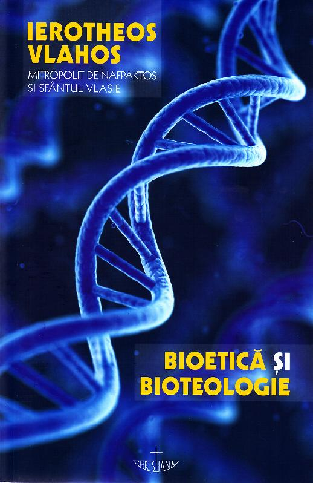

Poate nu aș fi scris rândurile de față dacă relativ curând nu aș fi fost vizat spre a fi luminat de către două persoane, în contextul discuției despre dileme morale și conflictul ce poate apărea, în cazurile complicate, între standarde morale. Printre exemplele care să ilustreze aceste situații a apărut și avortul. Atunci mi s-a spus, cu toată încrederea pe care o poate arăta cineva care știe ce spune, că până la un anumit număr de săptămâni fetusul este doar „o aglomerare de celule”. Exact acestea au fost cuvintele. „Cum adică, e ca și cum ai pune niște celule într-o găleată?”, am răspuns. Pentru că la o astfel de comparație te trimite expresia. Când am întrebat de unde a aflat prețioasa informație, mi-a răspuns că așa i-a învățat în liceu profesoara de biologie. Dar, continui eu, nici nu poate fi vorba despre așa ceva, din moment ce există constatări clare că celulele abia formate ale mușchiului cardiac se contractă și astfel inima omulețului-embrion începe să bată din a 22-a zi a apariției noii persoane.
Am încercat să îi stârnesc interesul despre acest subiect, însă nu știu dacă am reușit. Se pare că profesoara respectivă a fost foarte convingătoare și, oricum, este greu să clatini opiniile convenabile ale cuiva, mai ales dacă ele sunt transmise dintr-o minimă postură de autoritate, lucru dovedit concludent de experimentul Milgram. Desigur, Platon a expus mult mai devreme dificultatea ieșirii din peșteră. După vreo două săptămâni, o altă persoană, fără nicio legătură cu prima, o tânără proaspăt licențiată într-o țară din Vest, îmi vorbea despre progres, drepturi, libertate și îmi aruncă aceeași expresie, fără o iotă schimbată: embrionul este „o aglomerare de celule”. Nu se poate, îmi zic, e ceva în aer…
Iată de ce este nevoie să fie citite cărțile cu adevărat importante, acelea care vizează aspecte fundamentale ale vieții. O astfel de carte este Bioetică și bioteologie, semnată de Mitropolitul Ierotheos Vlahos, apărută la Editura Christiana, în 2013. Arhiereul Vlahos (scris Vlachos de cele mai multe ori; iar uneori întâlnim Hierotheos în loc de Ierotheos) este binecunoscut pentru implicarea în activitatea terapeutică pe care o desfășoară Biserica, încercând, prin cărțile sale, să dea răspuns la unele dintre provocările majore ale omului contemporan în general și ale creștinului în special. Preocuparea pentru bioetică a fost o constantă în demersul intelectual al autorului, fiind invitat de-a lungul timpului la numeroase simpozioane pe teme din acest domeniu. Datorită pregătirii și interesului pe care le-a dovedit, a fost desemnat membru constant al Comisiei de Etică și Deontologie Medicală, instituită în anul 2002 de Ministerul Sănătății din Grecia, participând la analiza diverselor subiecte dezbătute cu prilejul elaborării Codului Practicii și Deontologiei Medicale.
Universul bioeticii este fascinant prin multitudinea provocărilor ce apar, la un prim nivel, datorită întâlnirii dintre biotehnologiile de ultimă oră, așteptările și temerile pacienților, la care se adaugă interesele diverselor centre de cercetare. La un alt nivel, provocările se referă la riscurile încălcării demnității umane și chiar la posibilitatea de a pune în discuție actuala definire a omului, așa cum este cazul unor proiecte de inginerie genetică. În acest context al dezbaterilor se poate observa și diferența dintre bioetica seculară și bioetica ortodoxă, cea din urmă fiind ultimul bastion în fața presiunii create de institutele de cercetare, mânate fie de interese financiare sau militare, fie de curiozitate luciferică.
Bioetica laică a făcut numeroși pași înapoi în fața ofensivei cercetării, făcându-i pe gânditorii conservatori să vorbească despre trădarea bioeticii. Este de înțeles, de altfel, acest proces de cedare a terenului din partea celor care apără viața de pe poziții seculariste. Mai devreme sau mai târziu se ajunge aici din motive intrinseci. După Iluminism, o bună parte a lumii civilizate a considerat că se poate vorbi fără contradicții despre valori morale în lipsa oricărei raportări la Divinitate. Fie că erau considerate produse ale rațiunii rezultate în urma unor procese evoluționiste, fie că stăteau într-un spațiu al transcendențelor platoniciene, valorile morale au ajuns să fie desprinse de sursa lor divină. Această însușire le-a luat însă forța de reper clar atunci când atmosfera morală a devenit suficient de încețoșată, adică în contextul luptei dintre numeroase interese, drepturi și libertăți. De exemplu, în lupta dintre adepții libertății de a avorta și oponenții lor, bioeticienii aflați pe poziții seculariste ajung inevitabil în impas și nu pot da un răspuns acestei provocări, în final împărțindu-se și ei în tabere. De ce? Pentru că în lumea în care drepturile și libertățile în sine au primit o aură de sacralitate, nu poți alege decât arbitrar între dreptul femeii de a face tot ce dorește cu propriul corp și dreptul copilului nenăscut la viață. Dacă eticianul ține partea celor pro avort, atunci apelează la definirea ființei umane astfel încât să existe posibilitatea avortării la începutul sarcinii, până în săptămâna „X” sau „Y”. Dacă bunul simț moral îi spune eticianului că avortul este pruncucidere, atunci el va susține că nu poate fi segmentat arbitrar procesul dezvoltării embrionului și ca atare nu există o perioadă în care ar fi permis avortul. Astfel, lupta dintre bioeticieni va fi mutată pe terenul biologiei, unde, de asemenea, definirea ființei umane variază. Rezultatul: un cerc vicios.
Însă lucrurile stau cu totul altfel în bioetica ortodoxă (bioteologie, după cum o numește ÎPS Ierotheos Vlahos), pentru că omul, chip al lui Dumnezeu, primește de la El suflet în același moment în care părinții biologici îi dau trup. O persoană distinctă, unică în univers și irepetabilă apare odată cu apariția zigotului (ovulul fertilizat). Atunci se mai poate susține că avortul, indiferent în ce etapă a embrionului, este altceva decât omucidere? Se mai poate spune că avortul poate fi scuzat de noblețea vreunei libertăți, a vreunui drept? Orice persoană care acceptă premisele nu poate da un răspuns afirmativ. Așa cum nu poate fi de acord cu nicio formă de reificare a omului, fie că este vorba despre genomul uman ca simplu obiect de experimentare, fie că definește omul în funcție de capacitățile de „funcționare” sau după criterii utilitariste – o tentație tot mai puternică în prezent.
Voi enumera câteva teme din cuprinsul generos al cărții, teme tratate cu maximă seriozitate, autorul punând înaintea cititorilor datele științelor medicale, temeiurile bioeticii ortodoxe, precum și opiniile divergente: explozia revoluției biotehnologice, bioetica ortodoxă și alte bioetici, cartografierea genomului uman, clonarea, cercetările pe celule stem, tehnologiile reproductive, transplantul de organe, terapii celulare și genice, profilaxia bolilor, eutanasia, Unitatea de Terapie Intensivă, mutația și organismele modificate genetic, biobăncile, biopirateria, imixtiunea dintre companii, centre de cercetare și comisii, eugenia, determinismul biologic, „religia biologică” etc.
Închei prin a reda un fragment dintr-un citat aparținând lui H. Tristram Engelhardt Jr. (1941-2018), doctor în Medicină și Filosofie, considerat, după spusele profesorului Vasile Astărăstoae, fie „copilul teribil al bioeticii”, fie unul dintre „părinții bioeticii”, fie „apostolul creștinismului” în bioetică, convertit de la catolicism la ortodoxie în anul 1991, reper temporal în schimbarea discursului său:
„Etica ortodoxă nu reprezintă un corp de dogme și învățături, nici nu este un simplu set de norme de conduită corectă. Etica ortodoxă oferă îndumnezeirea și nu o simplă corectitudine etică. Este un mod de viață care îmbrățișează totul. Acest mod de viață îndumnezeit nu este ușor de definit, fiind centrat mai curând pe slujire decât pe analiză, mai curând pe un Dumnezeu transcendent decât pe niște principii inductive. Etica ortodoxă nu produce definiții, ci provoacă o strânsă legătură cu Persoanele Sfintei Treimi, prin intermediul unei colectivități aflate în comuniune euharistică. […] Adesea, etica ortodoxă nu oferă răspunsuri imediate la solicitările eticii seculare care par să o asedieze din toate părțile. Interesele celor două etici diferă radical. Etica ortodoxă caută sfințenia, chiar și în moarte, și nu doar ceea ce este bine și corect. Ortodoxia, mai presus de toate, nu ne cere să fim buni după măsurile acestei lumi, ci ne cheamă să fim sfinți, potrivit unor măsuri ce se află dincolo de această lume”. (H. Tristram Engelhardt Jr., apud Ierotheos Vlahos, Bioetică și bioteologie, pp. 57-58).
